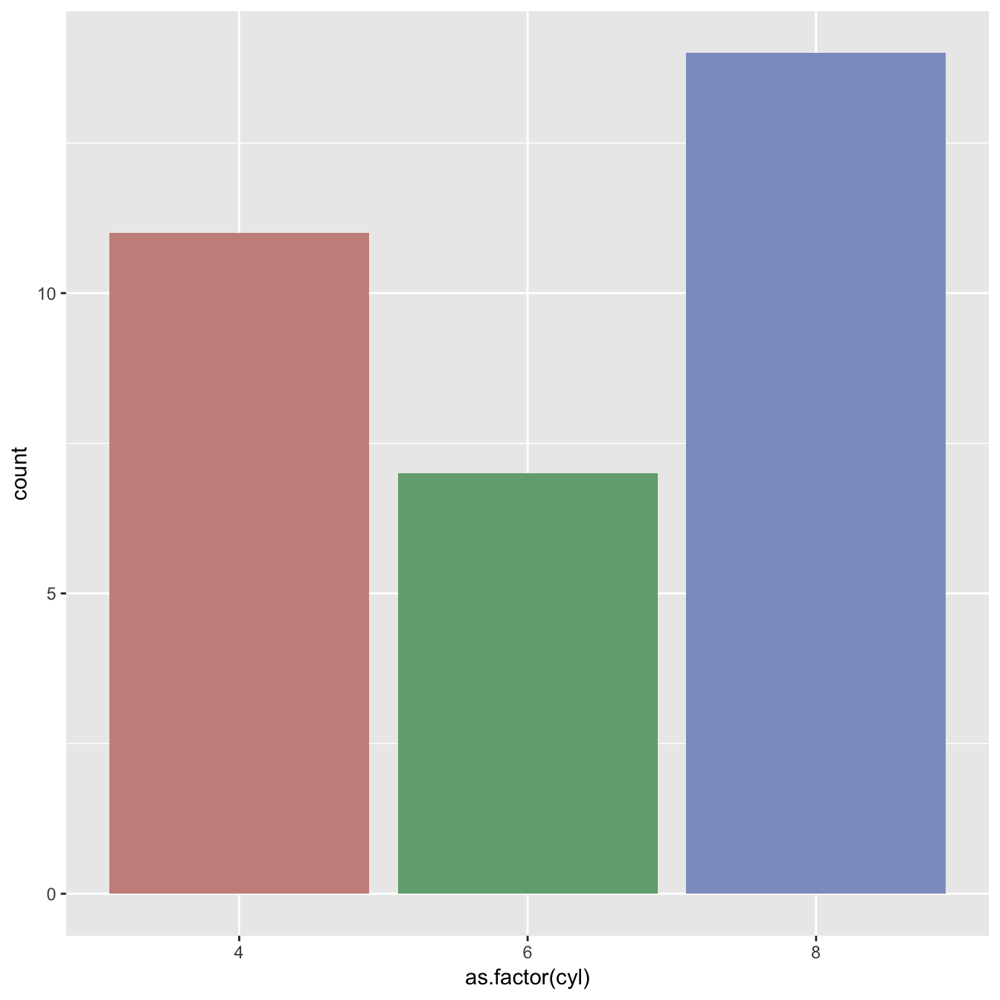
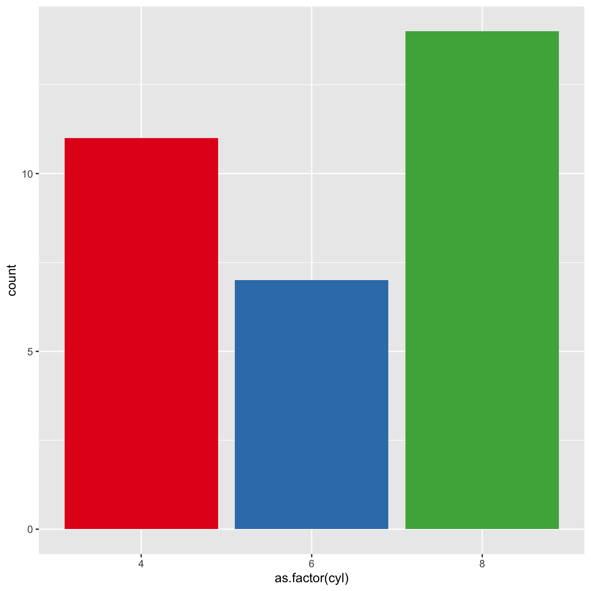
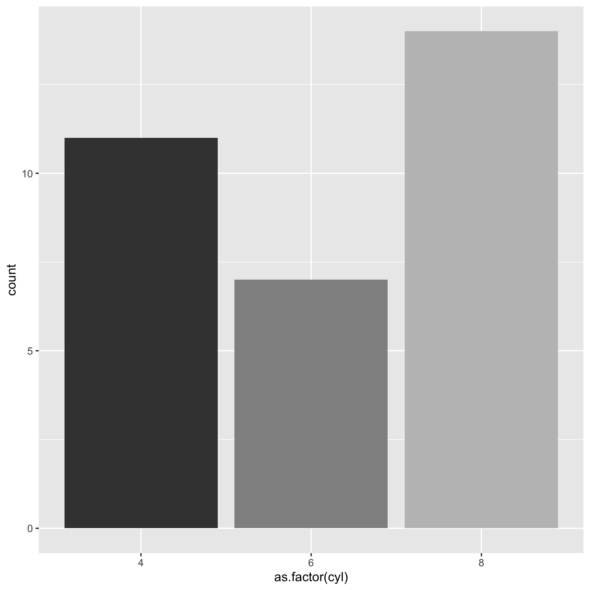
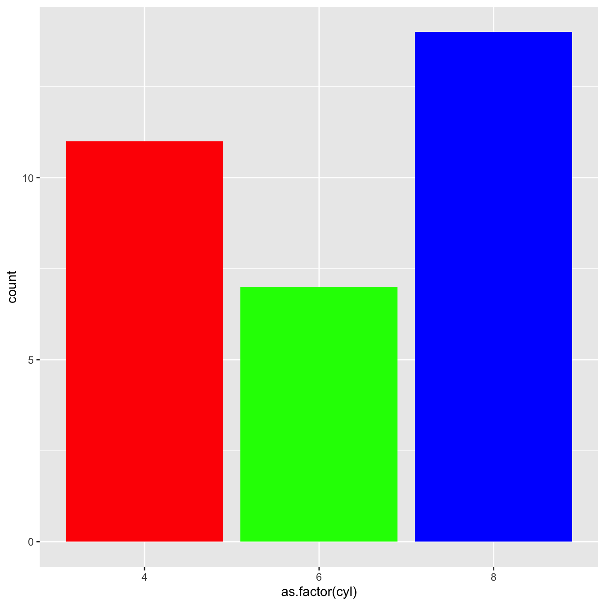
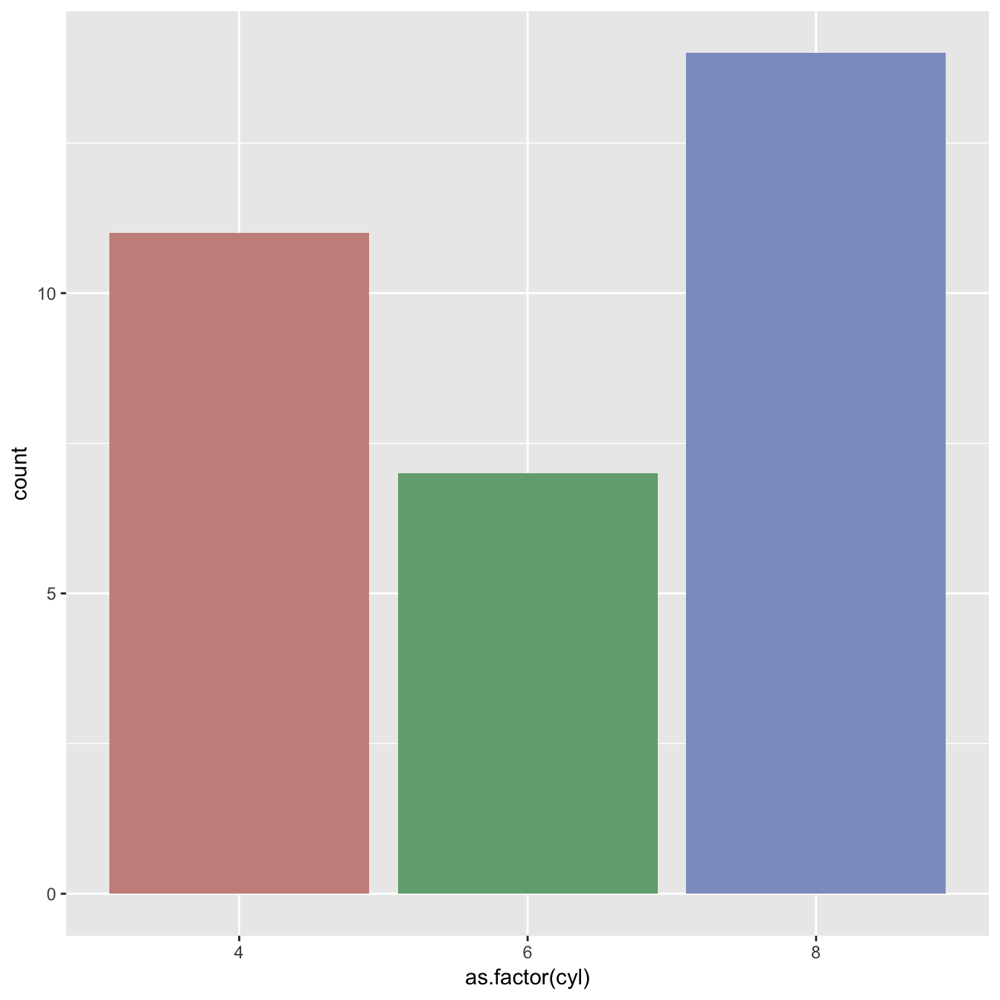
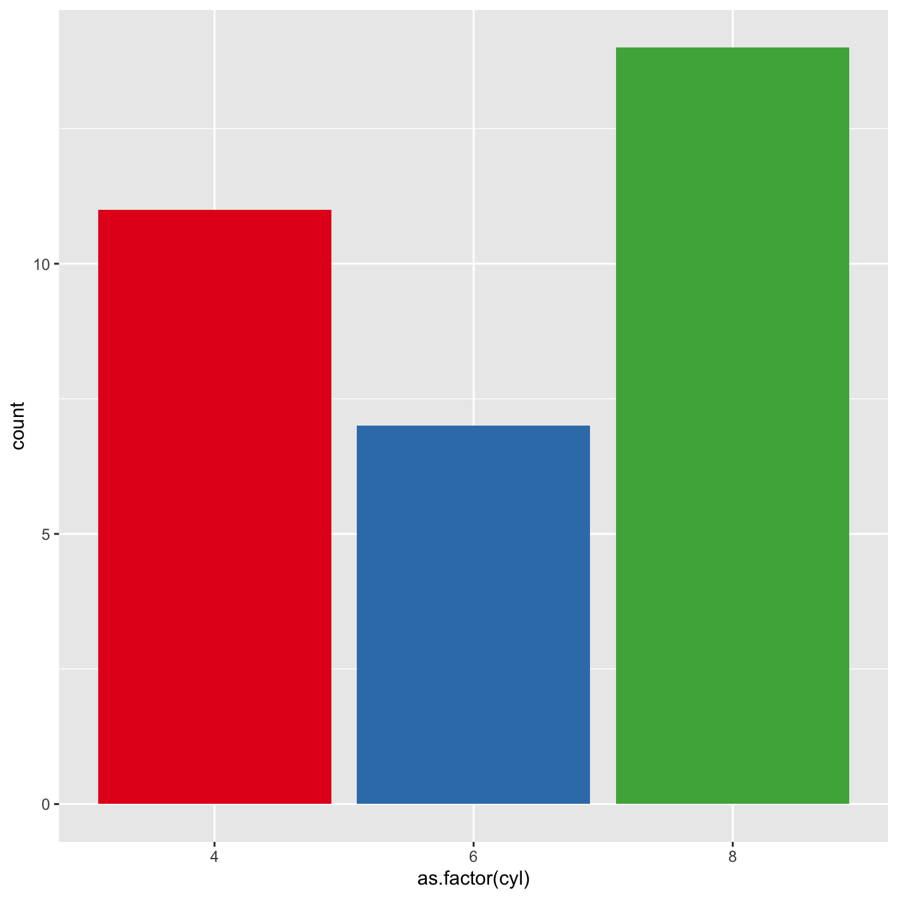
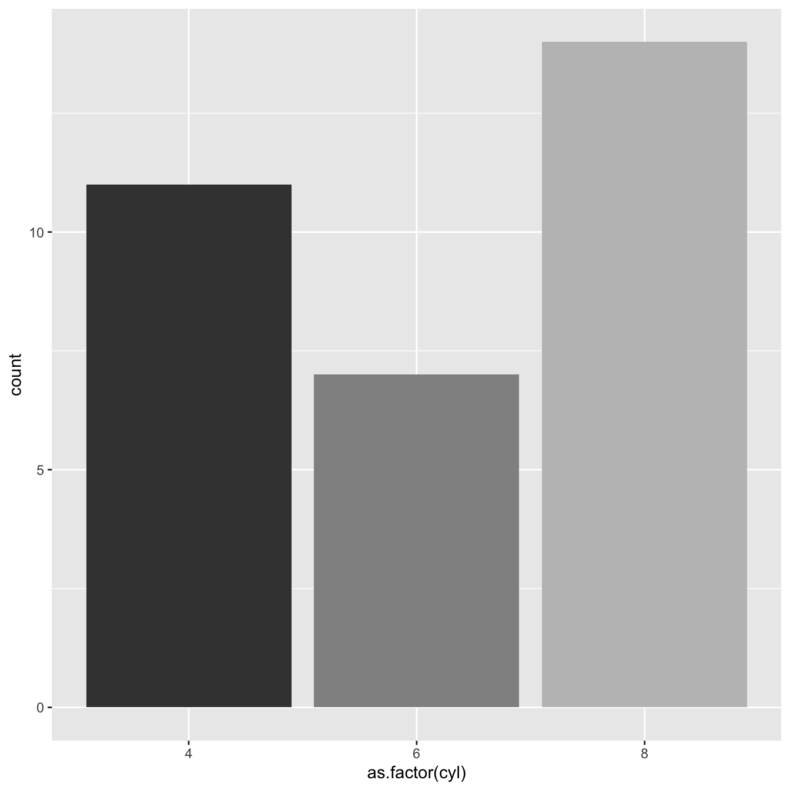
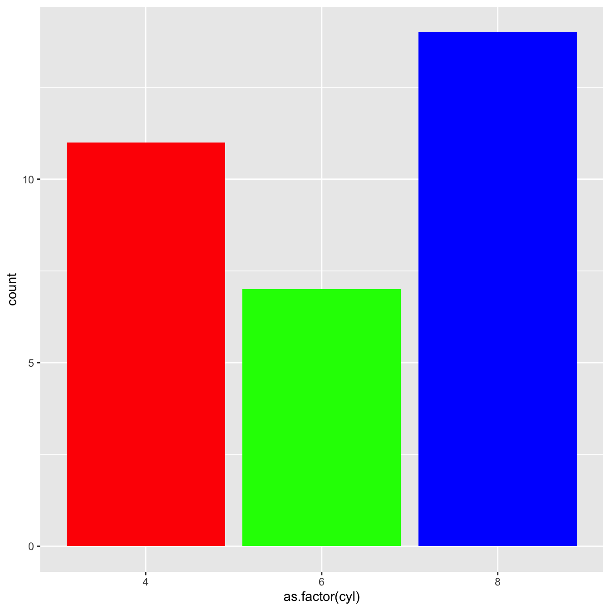
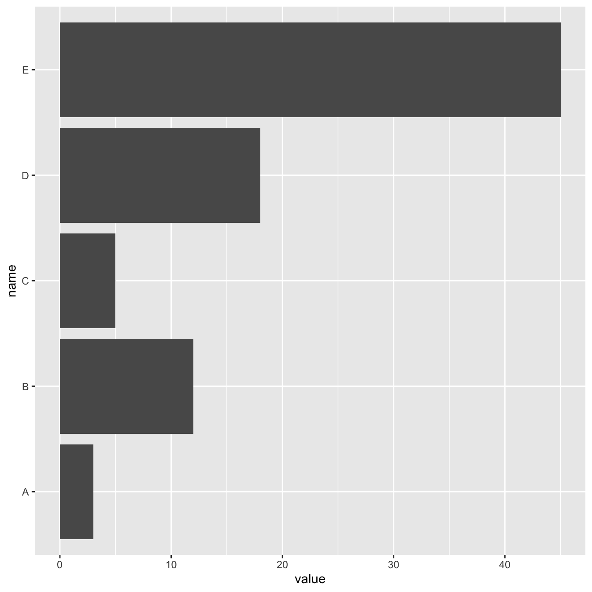
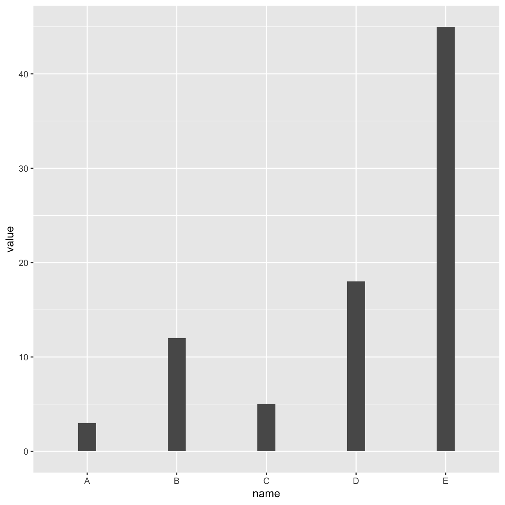

Most basic barplot with geom_bar()
This is the most basic barplot you can build using the ggplot2 package. It follows those steps:
-
always start by calling the
ggplot()function. -
then specify the
dataobject. It has to be a data frame. And it needs one numeric and one categorical variable. -
then come thes aesthetics, set in the
aes()function: set the categoric variable for the X axis, use the numeric for the Y axis -
finally call
geom_bar(). You have to specifystat="identity"for this kind of dataset.
# Load ggplot2
library(ggplot2)
# Create data
data <- data.frame(
name=c("A","B","C","D","E") ,
value=c(3,12,5,18,45)
)
# Barplot
ggplot(data, aes(x=name, y=value)) +
geom_bar(stat = "identity")Control bar color
 

Here are a few different methods to control bar colors. Note that
using a legend in this case is not necessary since names are already
displayed on the X axis. You can remove it with
theme(legend.position="none").
# Libraries
library(ggplot2)
# 1: uniform color. Color is for the border, fill is for the inside
ggplot(mtcars, aes(x=as.factor(cyl) )) +
geom_bar(color="blue", fill=rgb(0.1,0.4,0.5,0.7) )
# 2: Using Hue
ggplot(mtcars, aes(x=as.factor(cyl), fill=as.factor(cyl) )) +
geom_bar( ) +
scale_fill_hue(c = 40) +
theme(legend.position="none")
# 3: Using RColorBrewer
ggplot(mtcars, aes(x=as.factor(cyl), fill=as.factor(cyl) )) +
geom_bar( ) +
scale_fill_brewer(palette = "Set1") +
theme(legend.position="none")
# 4: Using greyscale:
ggplot(mtcars, aes(x=as.factor(cyl), fill=as.factor(cyl) )) +
geom_bar( ) +
scale_fill_grey(start = 0.25, end = 0.75) +
theme(legend.position="none")
# 5: Set manualy
ggplot(mtcars, aes(x=as.factor(cyl), fill=as.factor(cyl) )) +
geom_bar( ) +
scale_fill_manual(values = c("red", "green", "blue") ) +
theme(legend.position="none")Horizontal barplot with coord_flip()
It often makes sense to turn your barplot horizontal. Indeed, it makes the group labels much easier to read.
Fortunately, the coord_flip() function makes it a
breeze.

# Load ggplot2
library(ggplot2)
# Create data
data <- data.frame(
name=c("A","B","C","D","E") ,
value=c(3,12,5,18,45)
)
# Barplot
ggplot(data, aes(x=name, y=value)) +
geom_bar(stat = "identity") +
coord_flip()Control bar width with width
The width argument of the
geom_bar() function allows to control the bar width.
It ranges between 0 and 1, 1 being full width.
See how this can be used to make bar charts with variable width.

# Load ggplot2
library(ggplot2)
# Create data
data <- data.frame(
name=c("A","B","C","D","E") ,
value=c(3,12,5,18,45)
)
# Barplot
ggplot(data, aes(x=name, y=value)) +
geom_bar(stat = "identity", width=0.2) What’s next?
This post was an overview of ggplot2
barplots, showing the basic options of
geom_barplot(). Visit the barplot section for more:
- how to reorder your barplot
- how to use variable bar width
- what about error bars
- circular barplots